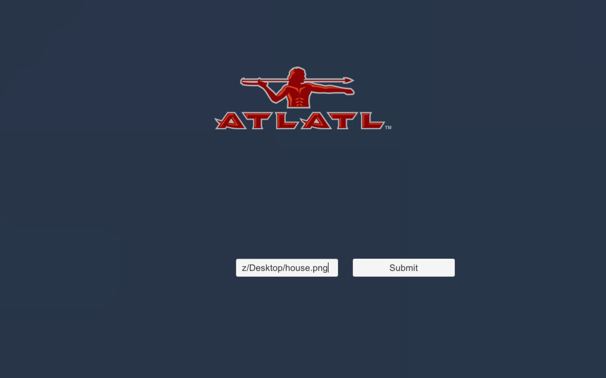
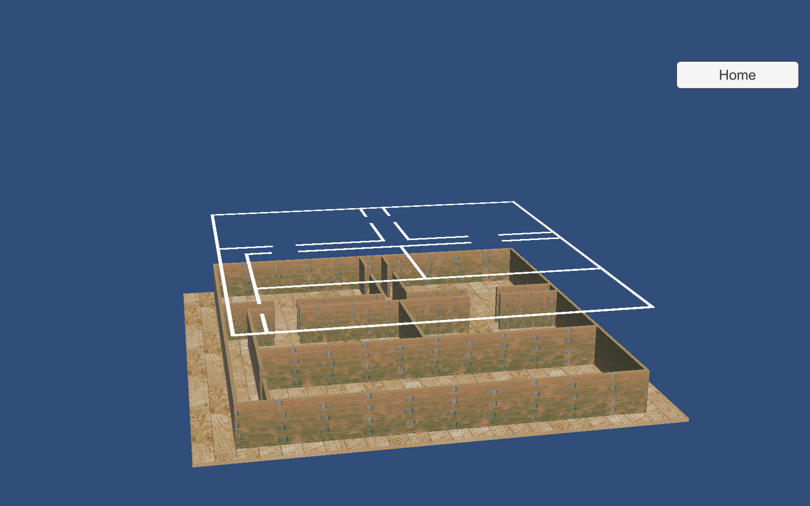
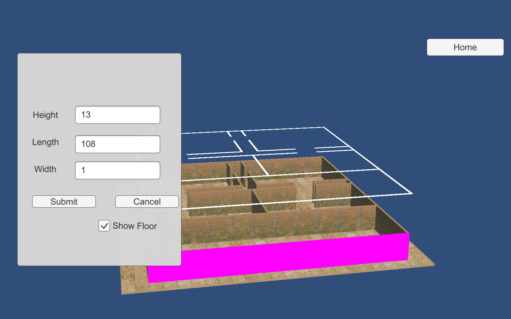
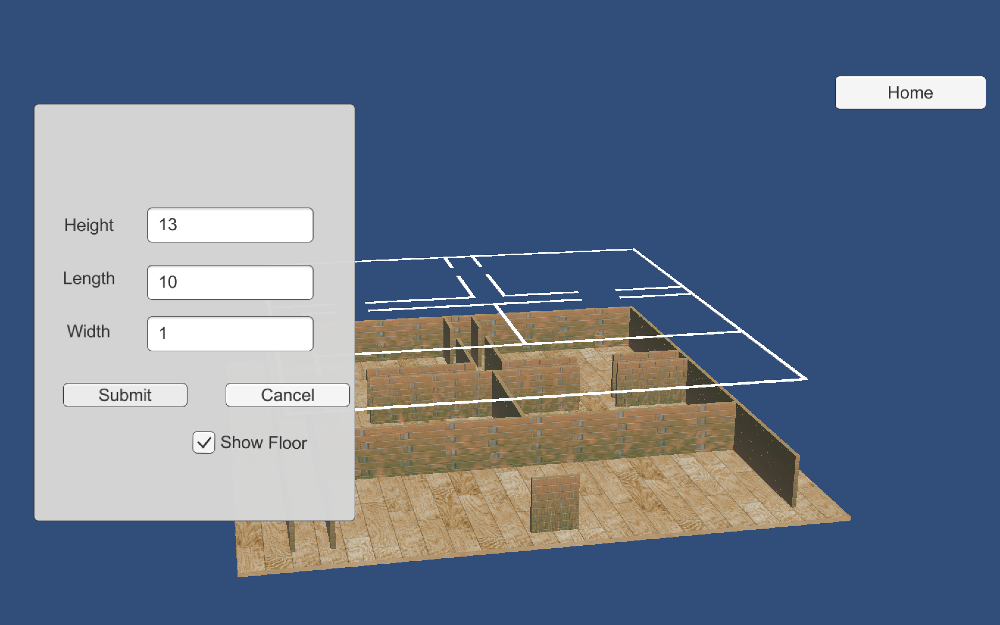
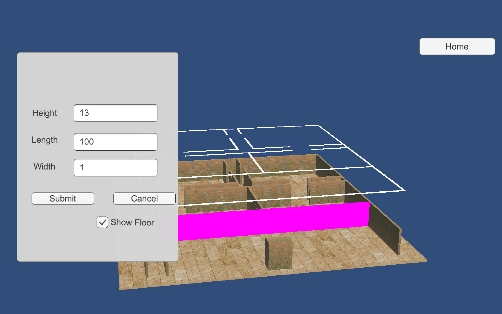
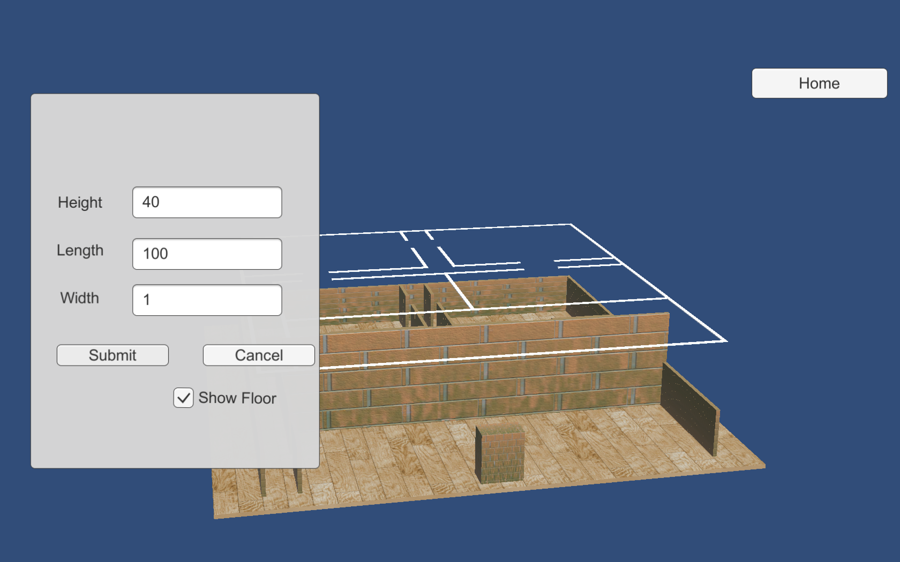
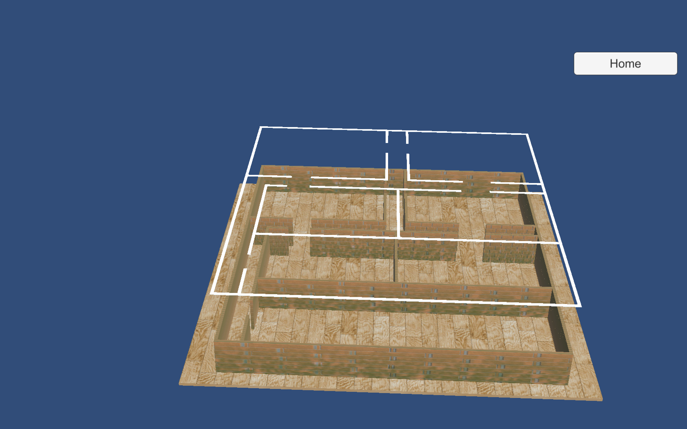

Description: Application built using the Unity Engine with scripts written in C#. This appication takes in a file path to a 2D blueprint image and creates a 3D model of the blueprint. In the 3D model view you are able to move the camera and select the walls using the mouse. Selected wall data is mutable.


SiteBuilder begins at the home screen. Input path to blueprint/floor plan image and press the Enter button

This will bring you to a 3D view model view. With the original outline in white on top of the model

Here you can use the right click on the mouse to select a wall which will quickly be hightlighted in pink and
bring the Wall data interface up

Here we have changed the length of the selected wall. Lets also change the with

The wall is now shorter and thicker. Lets select another wall and change its height

Now we have a tall wall. All dimensions can be changed through inputs and by pressing Submit,
you can toggle the floor on and off Cancel will hide the wall data.

Left clicking the mouse and moving the cursor will allow you to rotate the camera angle. Right clicking the mouse and moving the cursor will allow to move the camera. Scrolling will allow you to zoom in and out.